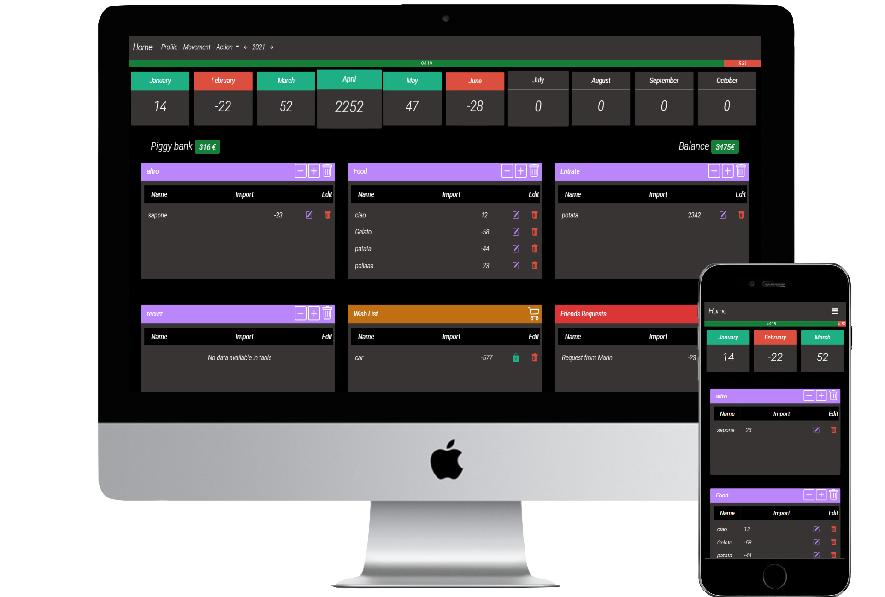
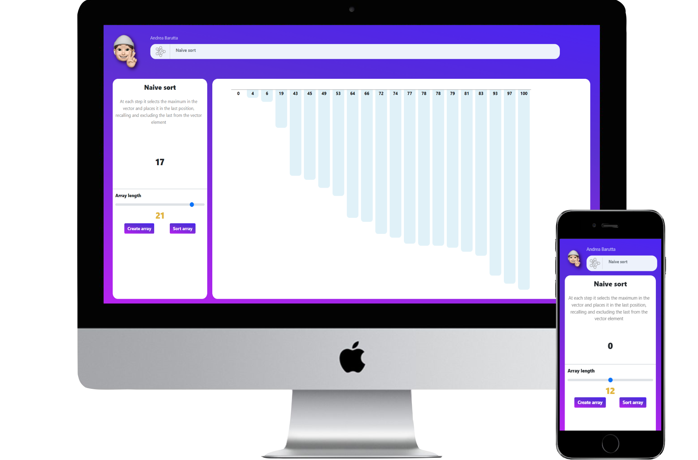
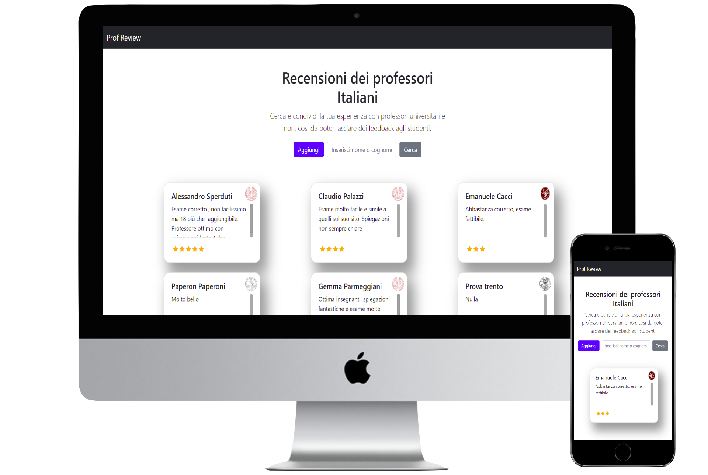

Sono un individuo rapido nell'apprendimento, proattivo e autonomo, determinato nel raggiungere gli obiettivi con concentrazione e puntualità. La passione per la tecnologia mi spinge costantemente verso l'innovazione. Nonostante l'impegno nel volley semi-professionistico e come allenatore, ho mantenuto una carriera scolastica e accademica di alto livello. Competendo nella Serie B nazionale con la squadra di Massanzago e ricoprendo il ruolo di allenatore, ho sviluppato un'etica del lavoro solida e la capacità di essere un punto di riferimento per gli altri. La gestione efficace del tempo mi ha consentito di mantenere prestazioni elevate sia negli studi che nello sport, dimostrando dedizione e determinazione nel perseguire i miei interessi.
Percorso di studi
- Percorso:
- Laurea in informatica
- Luogo:
- Università degli studi di Padova
- Periodo:
- 01/10/2021 – Attuale
- Percorso:
- Diploma tecnico informatico
- Luogo:
- ITIS Levi Ponti - Mirano (VE)
- Periodo:
- 10/09/2016 – 16/06/2021
- Voto finale:
- 100/100
Onoreficenze
- Premi studio per merito ottenuti - Università degli studi di Padova
- - Incentivo allo studio per lauree scientifiche - Anno 2022
- - Incentivo allo studio per lauree scientifiche - Anno 2023
- - Premi di studio WEGG in memoria di Marcello Molinari - Anno 2023
Competenze
Categorie
Sviluppo Web
- Web Design
- Web Accessibility
- HTML5
- CSS
- Javascript
- Coding PHP
- Django
- Responsive Design
- Bootstrap
- Usability Principles
- Browser Developer Tools
- JSON
- jQuery
- Buona conoscenza di WebGL e libreria Three.js
Programmazione
- Java
- C++
- Python
- JavaScript
- Paradigmi di programmazione
Sviluppo software
- Testing: Automazione test
- Test di unità
- Test di integrazione
- Test funzionali
- Metodologie Agile
- DevOps
- Git
- GitHub Action
- Fondamenti di SCRUM e Agile
- Docker
- Jira
Altro
- Competenza in Big Data e Stream Processing (Apache Kafka, ClickHouse, Grafana)
- Competenza nella progettazione, sviluppo e interrogazione di database relazionali
- Competenze di base in sicurezza informatica: principi e best practice per la protezione dei dati
- Sistemi Operativi: Competenza avanzata in ambiente Windows e Linux
- Marketing (Base)
- Web Marketing base
- Programmazioni di microcontrollori ESP-32
Lingue
- Italiano:
- Madrelingua
- Inglese:
- ASCOLTO B2
- LETTURA B2
- SCRITTURA B2
- PRODUZIONE ORALE B2
- INTERAZIONE ORALE B2
Livelli: A1 e A2: Livello elementare B1 e B2: Livello intermedio C1 e C2: Livello avanzato
Progetti
Progetti accademici
- All You Can Eat Sushi Brombeis
- Creazione di una web app per automatizzare il sistema di prenotazione tavolo e ordinazione dei piatti in un ristorante sushi. L'applicazione rispetta le regole di usabilità e accessibilità con un livello Doppia-A di conformita.
- HTML
- CSS
- JavaScript
- PHP
- MYSQL
- Progetto di gruppo
- Link
- Innovacity
- Sviluppo di un sistema di monitoraggio in tempo reale per sensori ambientali.
- Docker
- Docker-compose
- Python
- Faust
- Apache Kafka
- Confluent Schema Registry
- ClickHouse
- Grafana
- SCRUM
- Continuos Integration
- GitHub Action
- Testing (unità, integrazione, sistema, smoke test, performance, carico)
- Progetto di gruppo
- Link
- IstantRide
- InstantRide è un'applicazione che permette di creare, modificare,cancellare e visualizzare i veicoli e i noleggi di un'attività di noleggio mezzi di trasporto.
- C++
- Qt
- Link
- Winterlift
- Realizzazione di una base di dati per la gestione efficiente degli impianti sciistici.
- Postgres SQL
- Progetto di gruppo
Progetti personali
La maggior parte di questi progetti erano utilizzabili su piattaforme di hosting che ora sono divenute a pagamento, perciò non sono disponbili all'utilizzo temporaneamente
- Howfinances
- Web App per la gestione finanza personale. Progetto svolto per il diploma tecnico informatico.
- HTML
- CSS
- JavaScript
- PHP
- jQuery
- SQL
- Datatable
- Bootstrap
- Link
- 
- Sorting viewer
- Web App per la visualizzazione in tempo reale del funzionamento degli algoritmi di ordinamento
- HTML
- CSS
- JavaScript
- jQuery
- Link
- 
- Review
- Web App per la condivisione della propria esperienza con professori.
- Django
- Python
- mysqlLite
- Bootstrap
- 
- Portfolio personale
- Portfolio personale realizzato ai tempi delle superiori, un po' esagerato ma mi divertivo così, siate clementi.
- HTML
- CSS
- JavaScript
- jQuery
- NodeJS
- ThreeJs
- GSAP
- Figma
- Link
Contatti